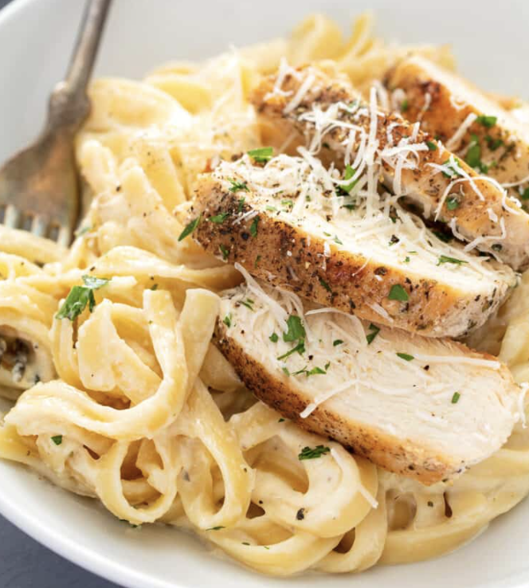
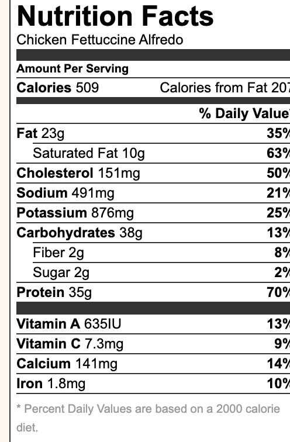

Chicken Alfredo

Time: 40 minutes
Servings: 8 people
Description
Nothing spells comfort like Italian food. Steaming bowls of pasta, buttery, roasted garlic bread, and tureens of the most flavorful sauces: it’s all right there. Sometimes, you want to bring that comfort into your very own kitchen and, well, we’ve got just the recipe for you. This easy chicken alfredo penne will have you saying ‘mangia!’ before you even know it.
Ingredients
- 2 lbs Chicken Breast
- 3/4 lbs fettuccine pasta , (or angel hair or vermicelli pasta)
- 2 lbs Chicken Breast
- 1 lb white mushrooms, thickly sliced
- 1 small onion, finely chopped
- 3 cloves garlic, minced
- 3 1/2 cups half and half
- 1/4 cup parsley, finely chopped,, plus more for garnish
- 1 tsp sea salt, or to taste, plus more for pasta water
- 1/4 tsp black pepper, or to taste
- 3 Tbsp olive oil, divided
- 1 Tbsp butter
Steps
- Cook fettuccini in a pot of salted water (4 qts water, 1 Tbsp salt,) according to package instructions then drain and set aside.
- Meanwhile, slice chicken into strips and season all over with salt and pepper. In a large skillet, heat 2 Tbsp olive oil over medium/high heat and sauté chicken until lightly golden and cooked through (5 min). Remove chicken from the pan and cover to keep warm.
-
In the same pan over medium/high, heat 1 Tbsp olive oil and 1 Tbsp of butter. Add onion and sauté 3 min until soft. Add sliced mushrooms and sauté until soft (5-7 min), stirring frequently. Add garlic and sauté 30 seconds, stirring constantly.
-
Add half-n-half and simmer over medium/high heat 8-10 min, or until beginning to thicken. Add chicken back to the pan, add 1/4 cup parsley and season sauce to taste (1/2 to 1 tsp salt and 1/4 tsp pepper).
-
Add cooked pasta and stir to combine. Heat another minute until warmed through then turn off the heat, cover and let rest 10-15 minutes then stir and serve garnished with parsley.
Nutrition Facts

Back to home